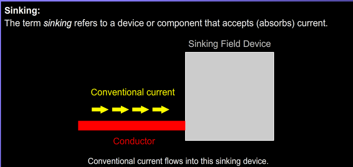
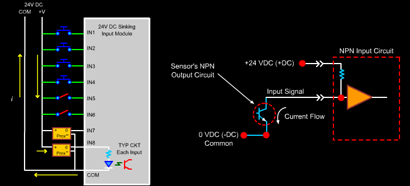
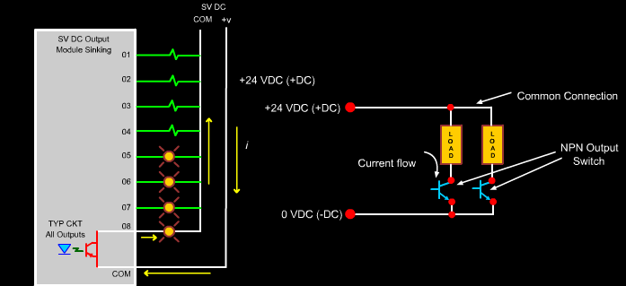
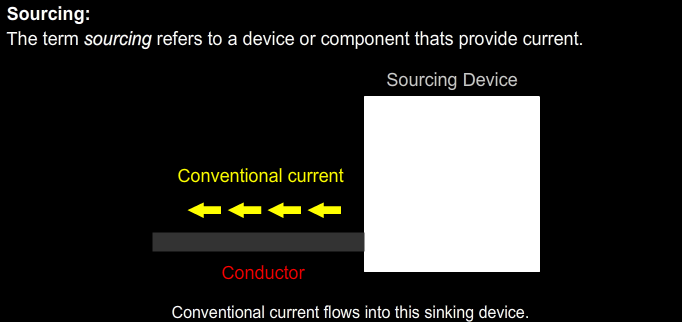
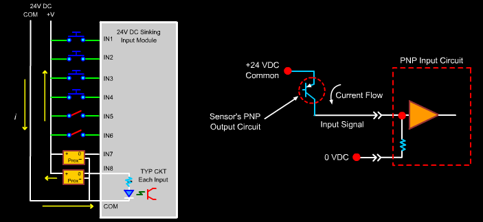
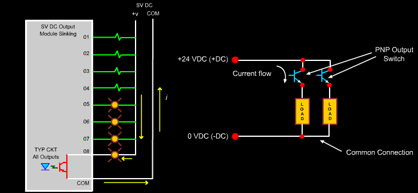

and Sourcing (NPN) Concept.png)
Sinking and Sourcing Concept
In PLC systems, sinking and sourcing describe how current flows between field devices and PLC input/output modules. Understanding this concept is essential for proper wiring and safe operation.
Basic Current Flow Concept
- Conventional current flows from positive (+) to negative (-).
- The terms sinking and sourcing describe which device provides (+) or receives (-) current.
What is Sinking in PLC?
Sinking refers to a method of wiring in DC control systems where a device (such as a sensor, switch, or output module) connects the load or signal line to the negative terminal (0V or ground) of the power supply. In this setup, the current flows from the positive side of the power source, through the load or PLC input, and finally to ground through the sinking device.

Why Is It Called “Sinking”?
The term “sinking” comes from the idea that the device “sinks” or receives current into its terminal and routes it to 0V. This means the current enters the device (PLC input or output) and exits toward ground. The opposite concept is “sourcing,” where the device provides or “sources” current from the positive voltage.
Key Features of Sinking Circuits:
- Current Direction: Current flows into the PLC input or output terminal.
- Power Reference: The device is connected to 0V (ground) of the DC power supply.
- Sensor Compatibility: Requires PNP (sourcing) sensors or switches, which send positive voltage when active.
- Common Usage: Frequently used in European and industrial automation standards.
- Logic Behavior: The input is considered ON when voltage is present due to current flow into the terminal.
How a Sinking Input Works (Example):
- The common terminal of the PLC input is wired to the +24V power supply.
- The PNP sensor has its output connected to the PLC input channel (e.g., I0.0).
- When the sensor detects an object, it sends +24V to the PLC input.
- Current flows from +24V (common), through the PLC input circuit, into the sensor, and finally down to 0V ground.
- This current flow activates the PLC input and registers it as an ON signal.

Sinking Output:
- A sinking output module switches the negative (-) side of the load.
- The load is connected to +24V DC.
- When ON, current flows from the load into the PLC output.
- Also called:
- NPN output.

What is Sourcing in PLC?
Sourcing refers to a wiring method in DC PLC circuits where a device (such as a sensor, switch, or output module) provides current from the positive terminal (+24V) of the power supply to a connected load or PLC terminal. In this configuration, current flows out from the sourcing device and continues through the PLC input or output channel, finally reaching the ground (0V).

Why Is It Called “Sourcing”?
The term “sourcing” is used because the device “sources” or supplies the current into the circuit. That means it acts as the provider of positive voltage. The device sends +24V into the circuit when active, and this current continues toward a sinking component, such as a PLC input or another grounded load.
Key Features of Sourcing Circuits:
- Current Direction: Current flows from the device (sensor or PLC output) into the load or PLC input terminal.
- Power Reference: The sourcing device is connected to the +24V side of the power supply.
- Sensor Compatibility: Requires NPN (sinking) sensors or switches, which pull the signal down to 0V when active.
- Common Usage: Frequently used in North American industrial automation systems.
- Logic Behavior: The input is considered ON when current is sourced into the terminal from the field device.
How a Sourcing Input Works (Example):
- The PLC input common terminal is connected to 0V (ground).
- The NPN sensor's output wire is connected to a specific PLC input channel (e.g., I0.0).
- When the sensor detects an object, it connects the signal wire to 0V (sinks current).
- Current flows from the +24V power supply, through the PLC input circuitry, into the sensor output, and finally down to 0V.
- This current flow is detected by the PLC, which registers the input as active (ON).


PNP and NPN Sensor Wiring

Sinking vs. Sourcing Comparison Table
| Feature | Sinking | Sourcing |
|---|---|---|
| Current Direction | Into the PLC input or output terminal | Out of the PLC input or output terminal |
| Wiring Connection | Device connects to 0V (DC-) | Device connects to +24V (DC+) |
| PLC Common Terminal | Connected to +24V | Connected to 0V |
| Sensor Type Used | PNP (Sourcing sensor) | NPN (Sinking sensor) |
| Signal When Active | 0V (low signal) | +24V (high signal) |
| Regions Where Common | Europe, Asia | North America |
| Common Application | Field device pulls input down to 0V | Field device drives input with +24V |
| Typical Use Case | Inputs that expect a 0V signal from device | Inputs that expect a +24V signal from device |